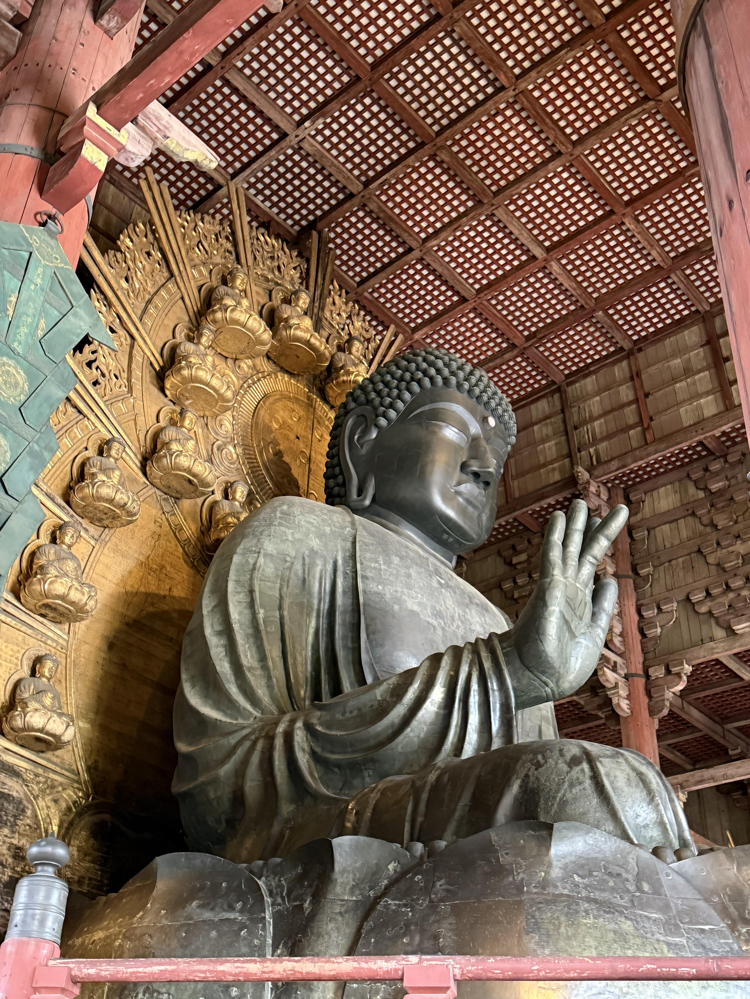
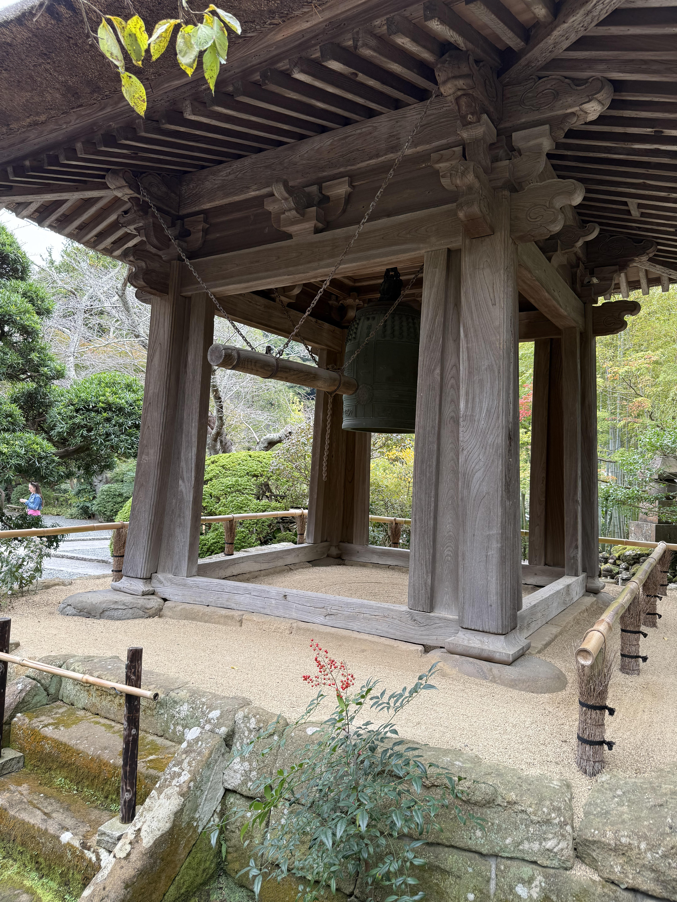
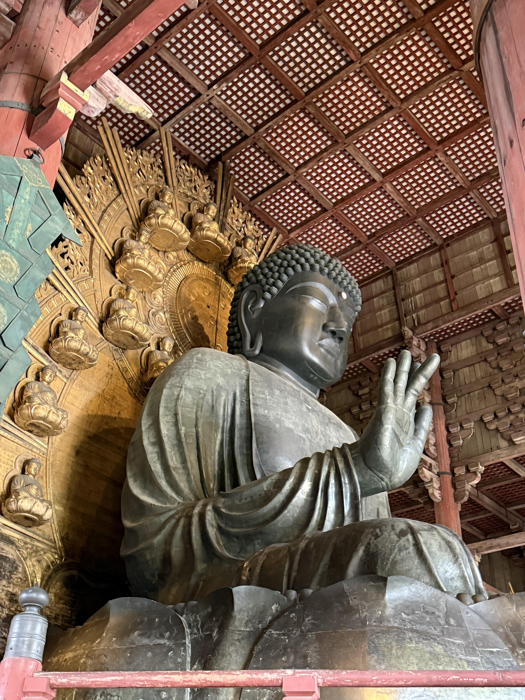
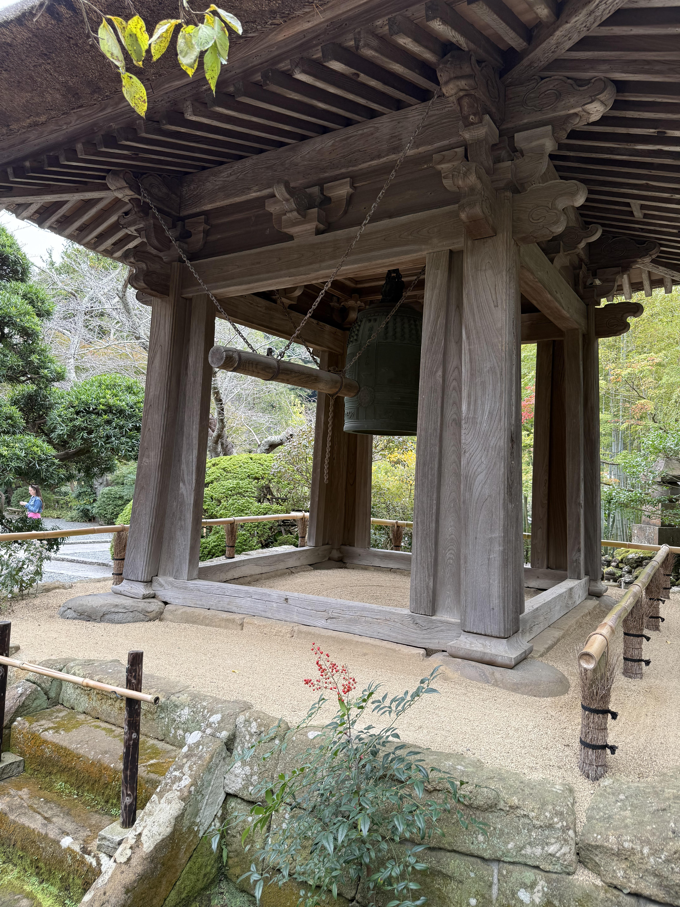

My Favorite Photos

 



Through the morning mist of Kyoto's temples, bronze bells awaken ancient spirits. Here, where jade-colored moss cradles centuries-old stones, Buddha's presence lingers like incense in still air. Each step along the worn temple paths echoes with the footsteps of countless pilgrims who came before. In the great hall of Todaiji, the massive bronze Buddha gazes down with eyes of infinite compassion. His gentle smile holds secrets of enlightenment, unchanged since artisans first shaped his form over a thousand years ago. Sunbeams filter through wooden beams, creating halos of dust that dance like spirits before his serene face. The zen gardens speak in whispers of emptiness and form. Raked gravel flows like frozen waves around islands of stone, teaching lessons of impermanence without words. Here, monks in black robes sweep fallen leaves with the same mindfulness they bring to their deepest meditations. In mountain temples, prayer flags flutter like butterfly wings in the wind, carrying wishes to heaven. The sound of wooden blocks being struck marks time differently here – not in minutes and hours, but in breaths and heartbeats. Each strike is a reminder to return to the present moment, to find Buddha nature in the simplest of acts.